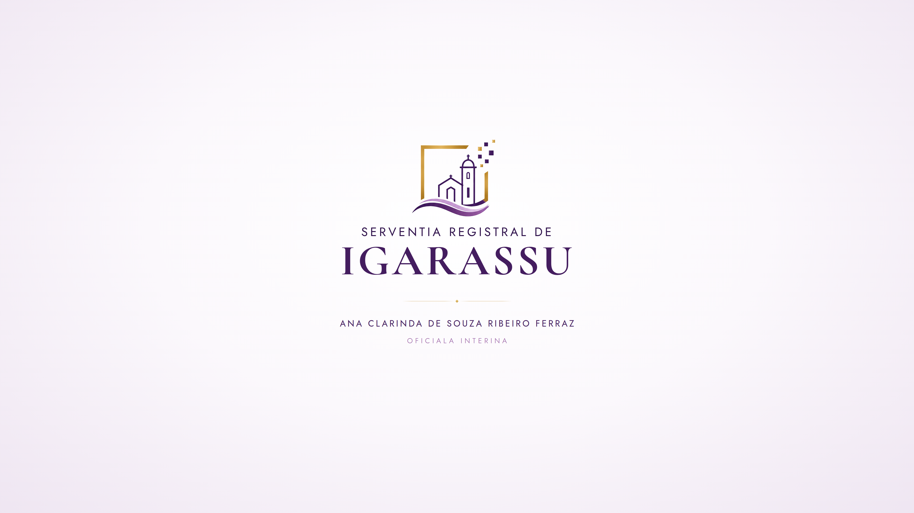

Missão
Prestar serviços registrais com responsabilidade, favorecendo a segurança jurídica e o acesso do cidadão a informações claras.
Responsabilidade no registro, clareza na informação e respeito em cada atendimento.

A Serventia Registral de Igarassu atua na prestação de serviços de Registro de Imóveis, Registro de Títulos e Documentos e Registro Civil das Pessoas Jurídicas.
O compromisso institucional é oferecer informação compreensível, tratar cada solicitação com responsabilidade e aproximar o cidadão dos serviços registrais.
A modernização e a atenção ao público orientam uma experiência de atendimento respeitosa, em harmonia com as exigências próprias da atividade registral.
A condução da serventia tem como referência a responsabilidade pela atividade registral e a observância das normas aplicáveis.
CNPJ 68.672.136/0001-81Prestar serviços registrais com responsabilidade, favorecendo a segurança jurídica e o acesso do cidadão a informações claras.
Aproximar tradição e modernização em uma experiência de atendimento cada vez mais acessível e organizada.
Legalidade, transparência, respeito, proteção de dados e cuidado com a informação em cada ato praticado.